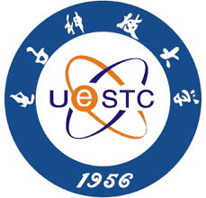
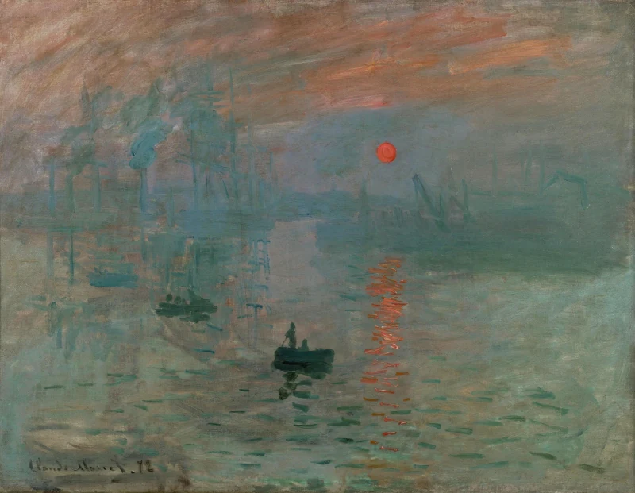

Accelerates agentic visual reasoning with a lightweight speculative planner and confidence-based gating, reducing costly tool-use loops while preserving accuracy.
Jinfa Huang
( 黄锦发 )
Bonjour 👋 I am a Ph.D. candidate in the Department of Computer Science at the University of Rochester, advised by Prof. Jiebo Luo. Previously, I earned my master's degree from Peking University (PKU) under the supervision of Prof. Li Yuan and Prof. Jie Chen, and my bachelor's degree with honors from the University of Electronic Science and Technology of China.
My research focuses on vision-language alignment for agentic AI.
Photo 1 of 2: Jinfa Huang outdoors in a city
@San Francisco, Jul 2026
News
- [2026/09] Passed my thesis proposal defense, Toward Vision-Language Alignment for Agentic AI, and was officially admitted to Ph.D. candidacy.
- [2026/07] Selected as ECCV 2026 Outstanding Reviewer.
- [2026/06] 1 paper (SpecEyes) accepted by ECCV 2026.
- [2026/06] I have joined Meta Superintelligence Lab as a Research Scientist Intern, focusing on agentic video generation.
- [2026/04] Won Meshy Fellowship Finalist Prize (Global Top 20).
- [2026/03] Released SpecEyes and SocialOmni for efficient agentic visual reasoning and evaluation of audio-visual social interaction.
- [2025/11]1 paper (QuoTA) accepted by AAAI 2026.
- [2025/10]I am excited to be selected as a volunteer at NeurIPS 2025. See you in San Diego.
- [2025/09]1 survey paper (Next-Gen AIGC) accepted by Frontiers of Computer Science 2025.
- [2025/09]2 papers (OpenS2V-Nexus and VideoRAG) accepted by NeurIPS main and D&B track 2025.
- [2025/08] "Text-to-Video AI Blossoms" featured by The Academic Minute.
- [2025/08]1 paper (TACO) accepted by EMNLP Main 2025.
- [2025/07]1 paper (MoE-LLaVA) accepted by TMM 2025.
-
[2025/07]
Released LatentCoT-Horizon repo
for Survey on Latent Reasoning.
- [2025/06]Research career has achieved 1000+ Google Citations.
- [2025/05]Workshop on MUCG will be presented at ACMMM 2025.
- [2025/05]MagicTime featured by University of Rochester News.
- [2025/04]Passed my area exam.
- [2025/04]MagicTime accepted by TPAMI 2025.
- [2025/03]AR-Visual Survey accepted by TMLR 2025.
- [2025/02]ConsisID accepted by CVPR 2025 Highlight (Top 3%).
- [2025/01]2 papers (1 Poster, 1 Spotlight) accepted by ICLR 2025.
- [2025/01]Medical LLM Survey accepted by Nature Reviews Bioengineering 2025.
- [2025/01]Started research internship at Google, USA.
- [2024/12]PromptLLM accepted by TPAMI 2025.
- [2024/12]1 paper accepted by AAAI 2025.
- [2024/12]1 short paper accepted by COLING 2025.
- [2024/11]1 paper accepted by TIST 2024.
- [2024/11]1 paper accepted by npj Digital Medicine.
- [2024/11]1 survey accepted by CAAI Transactions on Intelligence Technology.
- [2024/10]Released Autoregressive Models in Vision Survey.
- [2024/09]1 paper (Spotlight) accepted by NeurIPS 2024 Datasets & Benchmarks Track.
- [2024/09]1 paper accepted by EMNLP 2024 Findings.
- [2024/06]Released ChronoMagic-Bench.
- [2024/05]Started research internship at ByteDance Seed, USA.
- [2024/05]1 paper accepted by ACL 2024 Findings.
- [2024/04]Released MagicTime.
- [2024/01]1 paper accepted by ICLR 2024.
- [2023/11]Released MedLLMsPracticalGuide.
- [2023/11]Released GPT-4V(ision) Analysis.
- [2023/09]Join the VIStA Lab as a Ph.D. student.
- [2023/07]1 paper accepted by ACMMM 2023.
- [2023/05]Awarded 2023 Peking University Excellent Graduation Thesis.
- [2023/04]1 paper accepted by TIP 2023.
- [2023/04]1 paper accepted by IJCAI 2023.
- [2023/02]1 paper (Top 10% Highlight) accepted by CVPR 2023.
- [2022/09]1 paper accepted by ICRA 2023.
- [2022/09]1 paper (Spotlight) accepted by NeurIPS 2022.
Selected Research
[ALL]
 (Multimodal generation and understanding)
(Multimodal generation and understanding)
Generates time-lapse videos of evolving objects and scenes from language, learning patterns of physical transformation as a step toward metamorphic world simulation.
Builds compact shared video-language representations with expectation-maximization, reducing semantic redundancy for cross-modal retrieval.
Accelerates agentic visual reasoning with a lightweight speculative planner and confidence-based gating, reducing costly tool-use loops while preserving accuracy.
Grounds long-video understanding in retrieved speech, on-screen text, and object cues, augmenting video-language models without additional training.
Improves hateful meme detection with Chain-of-Evolution prompting, using retrieved meme pairs and contextual cues to interpret evolving visual and textual meanings.
Video-Text as Game Players: Hierarchical Banzhaf Interaction for Cross-Modal Representation Learning
Learns fine-grained correspondences between video frames and text tokens through cooperative game theory, supporting video-text retrieval and video question answering.
Builds compact shared video-language representations with expectation-maximization, reducing semantic redundancy for cross-modal retrieval.
Examines multimodal social-media understanding across five tasks, identifying strengths in image-text interpretation and limitations in reasoning and factual reliability.
Evaluates whether generated videos preserve reference subjects, appear natural, and follow text instructions, with fine-grained metrics and a five-million-scale supporting dataset.
Measures meaningful transformations and temporal coherence in generated time-lapse videos, complementing visual quality and text alignment with evaluation of metamorphic change.
Benchmarks who is speaking, when to join a conversation, and how to respond, diagnosing gaps between audio-visual perception and socially appropriate interaction.
Generates time-lapse videos of evolving objects and scenes from language, learning patterns of physical transformation as a step toward metamorphic world simulation.
Preserves human identity in text-conditioned video generation using frequency-aware facial features, supporting controllable visual futures without per-person fine-tuning.
Research Experience
Meta Superintelligence Lab, Multimedia Applied Research, USA
Research Scientist Intern • Jun 2026 - Present
Advisors: Dr. Yusheng Xie and Dr. Ali K. Thabet
Advisors: Dr. Yusheng Xie and Dr. Ali K. Thabet
Amazon, International Machine Learning, USA
Applied Scientist Intern • Jul. 2025 - Sep. 2025
Advisors: Dr. Yang Liu, Dr. Chien-Chih Wang, Dr. Huidong Liu
Advisors: Dr. Yang Liu, Dr. Chien-Chih Wang, Dr. Huidong Liu
Google, Core ML Applied ML, USA
Student Researcher • Jan. 2025 - May. 2025
Advisors: Jiageng Zhang, Dr. Eric Li
Advisors: Jiageng Zhang, Dr. Eric Li
ByteDance, Seed Foundation Model, USA
Research Intern • May 2024 - Aug. 2024
Advisors: Dr. Quanzeng You, Dr. Yongfei Liu, Dr. Jianbo Yuan
Advisors: Dr. Quanzeng You, Dr. Yongfei Liu, Dr. Jianbo Yuan
Education
University of Rochester (UR), USA
Ph.D. Candidate in Computer Science • Sep. 2023 - Present
Advisor: Prof. Jiebo Luo
Advisor: Prof. Jiebo Luo
Peking University (PKU), China
Master's Degree in Computer Science • Sep. 2020 - Jun. 2023
Advisors: Prof. Li Yuan & Prof. Jie Chen
Advisors: Prof. Li Yuan & Prof. Jie Chen

University of Electronic Science and Technology of China (UESTC), China
Bachelor's Degree in Software Engineering • Sep. 2016 - Jun. 2020
Advisor: Prof. Xucheng Luo
Advisor: Prof. Xucheng Luo
Talks, Presentations & Media
-
SpecEyes: Accelerating Agentic Multimodal LLMs via Speculative Perception and Planning
-
Text-to-Video AI Blossoms
-
Text-to-video AI blossoms with New Metamorphic Video Capabilities
-
MagicTime: Time-lapse Video Generation Models as Metamorphic Simulators
-
Can Video Generation Models Serve as World Simulators?
Academic Service
- PC Member: CVPR'23-26, NeurIPS'22-25, ICLR'23-27, ICCV'23/25, ACM MM'24/25, ECCV'24/26, AAAI'25-27, COLM'25, ACL'25/26
- Journal Reviewer: TPAMI, IJCV, NEJM AI
- Outstanding Reviewer: ECCV 2026
- Volunteer: NeurIPS 2025
Teaching
- TA, CSC 240/440 Data Mining, Prof. Monika Polak, UR, Fall 2025
- TA, CSC 240/440 Data Mining, Prof. Thaddeus E. Pawlicki, UR, Spring 2025
- TA, CSC 240/440 Data Mining, Prof. Monika Polak, UR, Fall 2024
Personal Interests
- Film photography: Capturing moments with disposable cameras.
- Anime: Love, sports, and sci-fi, e.g., Gintama and Frieren.
- Literature: Xiaobo Wang & Friedrich Nietzsche.
- Art: Claude Monet fan; seen around 90 original works so far.
-
Coding: Maintainer of
PKU-Beamer-Theme
and Build-Your-Own-X-with-Vibe-Coding
.

“Impression, Sunrise” (1872), by Claude Monet.

My hometown is Guangdong; you can call me by my Cantonese name, Gamfaat Wong.
Last updated in September 2026.